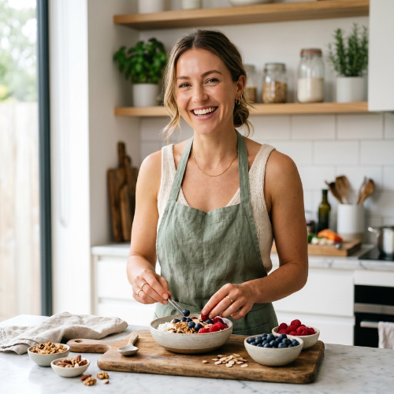

Easy One Bowl Lemon Cake Recipe with a Protein Boost

Cynthia Sullivan
Published on May 29, 2026
10 min Prep Time
25 min Time
8 Servings
Easy Difficulty
This one bowl lemon cake is a delightful twist on a classic treat, packed with protein to keep you full longer. It’s super simple—no fancy steps or multiple bowls—and perfect for a quick snack or post-workout pick-me-up. The fresh lemon zest gives it a bright pop that makes it feel light and fresh.
Measure your protein powder accurately and sift it with the flour.
Protein powder can clump easily, and uneven distribution causes dry spots or chalkiness. Sifting ensures it blends evenly with flour, resulting in a smoother batter and better texture.
Don’t overmix the batter once wet and dry ingredients are combined.
Overmixing develops gluten, making the cake tough and dense. Gently fold until just combined to keep the crumb tender and light, especially important with protein powder which can toughen baked goods.
Let the cake cool completely before slicing.
Protein-enriched cakes need time to set their structure. Cutting too soon can cause crumbling or a gummy texture. Cooling allows the crumb to firm up and flavors to meld.
Use fresh lemon zest and juice for the best flavor.
Fresh lemon zest contains essential oils that add brightness and aroma you can’t get from extracts or bottled juice. This freshness balances the richness of protein and yogurt.
Store leftovers in an airtight container in the fridge.
Protein and dairy ingredients can spoil quickly at room temperature. Refrigeration keeps the cake fresh and preserves texture for several days.
If your batter feels too thick, add a splash more almond milk.
Protein powder absorbs moisture, which can thicken batter. Adding a little liquid ensures the cake stays moist and bakes evenly without drying out.
Try chilling the batter for 10 minutes before baking.
Resting the batter hydrates the protein powder fully, reducing chalkiness and improving the cake’s texture and flavor.
Common Mistakes to Avoid
Cake turning out too dry or crumbly
Why it happens This often happens when there’s too much protein powder relative to wet ingredients or overbaking, which dries out the cake.
Fix Ensure you measure protein powder carefully and balance with enough yogurt and oil. Check the cake a few minutes before time is up to avoid overbaking. Adding a splash more liquid to the batter can help if it seems thick.
Chalky or gritty texture in the cake
Why it happens Chalkiness comes from protein powder not hydrating well or being unevenly mixed.
Fix Sift protein powder with flour and fold batter gently. Letting the batter rest before baking also helps hydrate the protein and smooth out texture.
Cake not rising properly or dense
Why it happens Overmixing or expired baking powder can prevent proper rise.
Fix Mix just until combined and confirm your baking powder is fresh. Also, avoid opening the oven early during baking.
Cake sticks to the pan
Why it happens Insufficient greasing or no parchment paper causes sticking.
Fix Grease the pan thoroughly or line with parchment paper for easy release.
Lemon flavor is too weak
Why it happens Using bottled lemon juice or not enough zest reduces brightness.
Fix Use fresh lemon zest and juice, and don’t skimp on the zest for that vibrant flavor.
Variations
Blueberry Lemon Protein Cake
Add 1/2 cup fresh or frozen blueberries to the batter for a fruity twist. Blueberries add antioxidants and a pop of color, complementing the lemon nicely. Expect a slightly moister cake with bursts of juicy sweetness.
Note: Fold blueberries gently at the end to avoid breaking them up. You may need to add a minute or two to baking time due to added moisture.
Vegan Lemon Cake with Pea Protein
Swap eggs for flax eggs and use pea protein powder instead of whey for a vegan-friendly version. Use coconut yogurt in place of Greek yogurt. The texture will be slightly denser but still moist and flavorful.
Note: Pea protein absorbs more liquid, so increase almond milk by 2-3 tablespoons and bake a bit longer, checking doneness carefully.
Lemon Poppy Seed Protein Cake
Stir in 2 tablespoons of poppy seeds for a classic lemon poppy seed flavor and added crunch. This variation adds fiber and a nutty texture without changing macros much.
Note: Add poppy seeds with dry ingredients and mix gently to distribute evenly.
Gluten-Free Almond Flour Lemon Cake
Replace all-purpose flour with almond flour for a gluten-free option. This will make the cake more dense and moist with a rich nutty flavor, plus boost healthy fats and protein slightly.
Note: Almond flour batter is wetter; reduce almond milk slightly and bake 3-5 minutes longer, testing for doneness.
Lemon Ginger Protein Cake
Add 1 teaspoon freshly grated ginger or ground ginger to the batter for a spicy zing that pairs beautifully with lemon. Ginger adds anti-inflammatory benefits and warmth to the flavor profile.
Note: Mix ginger with wet ingredients to distribute evenly and avoid clumping.
Nutrition
Per Serving:
210 kcal
Calories
15g
Protein G
22g
Carbohydrates G
6g
Fat G
2g
Fiber G
150mg
Sodium
Nutritional values are estimates and may vary based on specific ingredients and protein powder used. Always calculate based on your specific brands.
Storage & Tips
Room Temperature
This cake can be kept at room temperature for up to 12 hours if covered tightly to prevent drying. However, protein and dairy ingredients mean it’s best eaten within a day if not refrigerated to avoid spoilage.
Refrigerator
Store in an airtight container in the fridge for up to 4 days. The cake firms up when chilled but maintains moisture well. Bring to room temperature before serving for best texture or enjoy cold as a refreshing snack.
Freezer
Freeze the cake wrapped tightly in plastic wrap and foil for up to 2 months. Thaw overnight in the fridge and warm briefly in the microwave or oven to restore softness.
Reheating
This cake is best eaten cold or at room temperature. If desired, warm a slice in the microwave for 15-20 seconds or in a low oven (300°F) for 5-7 minutes. Avoid overheating to prevent drying.
Make Ahead
You can prepare the batter a day ahead and keep it covered in the fridge, then bake fresh when ready. Alternatively, bake the cake and store it in the fridge for easy grab-and-go snacks throughout the week. Adding fresh lemon zest just before baking keeps flavor bright.
FAQ
Can I use plant-based protein powder instead of whey?
Yes, but plant proteins like pea or soy absorb liquids differently and can affect texture. You may need to add more liquid to keep the batter moist and expect a slightly denser cake. Also, the flavor can be earthier, so consider adding complementary spices or extracts.
How do I prevent the cake from tasting chalky?
Chalkiness usually comes from protein powder not hydrating fully or being unevenly mixed. Sift protein powder with flour and fold batter gently. Letting the batter rest for 10 minutes before baking helps the protein absorb moisture, improving texture.
Can I make this cake gluten-free?
Absolutely! Substitute all-purpose flour with almond flour or a gluten-free baking mix. Almond flour will make the cake moister and denser, so reduce liquids slightly and bake a bit longer, checking doneness carefully.
Is this cake suitable for meal prep?
Yes, it stores well in the fridge for several days and freezes nicely. It’s a great protein-rich snack to portion out for busy days or post-workout refueling.
Can I replace Greek yogurt with something else?
You can use dairy-free yogurt for a vegan version, but it may change texture and moisture. Full-fat yogurt works best to keep the cake tender and moist.
How do I know when the cake is done baking?
Insert a toothpick into the center; it should come out clean or with a few moist crumbs. The top should be golden and spring back lightly when touched.
Can I add frosting or glaze?
Yes, a simple lemon glaze made with powdered sugar and lemon juice complements the cake beautifully. Avoid heavy frostings that can overpower the delicate lemon flavor.
What’s the best way to store leftovers?
Keep the cake in an airtight container in the fridge for up to 4 days. You can also freeze slices individually wrapped to keep them fresh longer.
Can I double the recipe?
Yes, just double all ingredients and use a larger baking pan or two pans. Baking time may increase slightly; check doneness with a toothpick.
Is this cake low in sugar?
It has moderate sugar from granulated sugar and lemon juice, balanced by protein and fat. You can reduce sugar slightly or substitute with a natural sweetener like honey or maple syrup, but adjust liquid ratios accordingly.
What You'll Need
One 8-inch cake, 8 servings
1 cup all-purpose flour
1/2 cup vanilla whey protein powder
1/2 cup granulated sugar
1 teaspoon baking powder
1/4 teaspoon salt
1/2 cup plain Greek yogurt, room temperature
1/4 cup fresh lemon juice
Zest of 1 lemon
2 large eggs
1/4 cup unsweetened almond milk
2 tablespoons coconut oil, melted
1 teaspoon vanilla extract
How To Do It
Step 1
Preheat your oven to 350°F (175°C) and grease an 8-inch cake pan or line it with parchment paper. This step ensures your cake won’t stick and will come out cleanly after baking. Preparing the pan first saves you from last-minute scrambling and helps the cake bake evenly.
⏱ Time:5 minutes
✓ Doneness:Pan is fully coated or lined with no bare spots
Step 2
In a large mixing bowl, combine the flour, vanilla whey protein powder, sugar, baking powder, and salt. Whisk these dry ingredients together thoroughly to evenly distribute the baking powder and protein powder, which helps avoid clumping and ensures a uniform rise and texture in your cake.
⏱ Time:3 minutes
✓ Doneness:Dry ingredients are well mixed, light and airy
Step 3
Add the Greek yogurt, lemon juice, lemon zest, eggs, almond milk, melted coconut oil, and vanilla extract to the dry ingredients. Use a spatula or whisk to gently fold everything together until just combined. Overmixing can make the cake dense and tough, so stop when you see no more streaks of flour.
⏱ Time:3-4 minutes
✓ Doneness:Batter is smooth with no visible dry flour patches
Step 4
Pour the batter into the prepared cake pan and smooth the top with a spatula. This helps the cake bake evenly and look neat. If the batter is too thick, it might not spread well, so a gentle tap on the counter can help level it out.
⏱ Time:2 minutes
✓ Doneness:Batter evenly spread with a smooth surface
Step 5
Bake the cake in the preheated oven for 22-25 minutes. The baking time allows the protein powder to set properly without drying out the cake. Avoid opening the oven too early as this can cause the cake to collapse.
⏱ Time:22-25 minutes
✓ Doneness:Cake is golden on top and a toothpick inserted in the center comes out clean
Step 6
Remove the cake from the oven and let it cool in the pan for about 10 minutes. Cooling helps the structure set so it doesn’t crumble when you slice it. Don’t try to cut it while it’s hot—it will fall apart.
⏱ Time:10 minutes
✓ Doneness:Cake feels firm to the touch and slightly pulls away from the pan edges
Step 7
Transfer the cake to a wire rack to cool completely if you want to frost or serve it at room temperature. Cooling fully improves texture and flavor development, making it more enjoyable to eat.
⏱ Time:30 minutes
✓ Doneness:Cake is cool to the touch and no longer warm
Step 8
Optional: top with a light lemon glaze made from powdered sugar and lemon juice for an extra burst of flavor. Drizzle evenly and allow the glaze to set for 10 minutes before slicing. This adds moisture and a sweet-tart finish without overpowering the protein-rich cake.
⏱ Time:10 minutes
✓ Doneness:Glaze is set but still shiny
Step 9
Slice the cake into 8 equal pieces and enjoy! Store leftovers in an airtight container in the fridge to keep it fresh. This cake makes a great grab-and-go snack or post-workout treat that balances protein and carbs nicely.
⏱ Time:Immediate
✓ Doneness:Clean slices with moist crumb texture
Final Thoughts
I hope you give this one bowl lemon cake a try—it’s a simple way to enjoy a protein-rich snack that actually tastes like a treat. Share your results or tag me if you make it; I’d love to see how it fits into your snack routine!